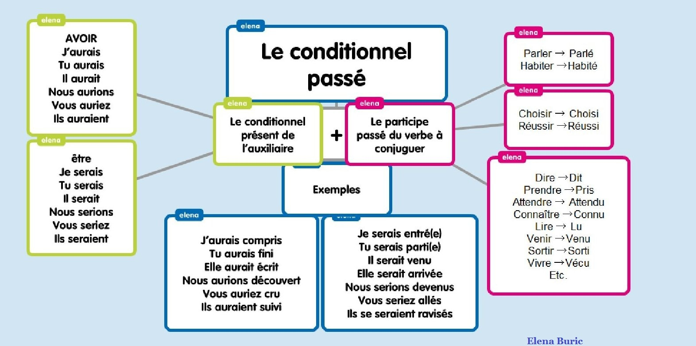

Le conditionnel passé
À retenir
Le conditionnel passé est un temps composé. Il exprime des actions qui auraient pu se produire dans le passé mais qui ne se sont pas réalisées (souvent avec un regret ou une hypothèse non vérifiée).
Construction : auxiliaire être ou avoir au conditionnel présent + participe passé du verbe.
👉 Même formation que le passé composé, mais avec l'auxiliaire au conditionnel présent !
Conjugaison complète
Les valeurs du conditionnel passé
Hypothèse non réalisée dans le passé
Avec "si" + plus-que-parfait, le conditionnel passé exprime une action qui aurait pu avoir lieu mais qui ne s'est pas produite.
Si j'avais eu de l'argent, j'aurais acheté cette maison.
Si tu étais venu, tu aurais rencontré ma sœur.
S'il avait fait beau, nous serions allés à la plage.
Regret / Reproche
Pour exprimer un regret par rapport à une action passée ou faire un reproche.
J'aurais dû lui dire la vérité. (regret)
Tu aurais pu me prévenir ! (reproche)
Nous aurions aimé te voir.
Information non confirmée dans le passé
Pour rapporter une rumeur, une information non vérifiée concernant le passé.
Le président aurait été malade la semaine dernière.
Les voleurs se seraient enfuis par la fenêtre.
Il aurait gagné au loto.
Fait imaginaire dans le passé
Pour raconter des événements imaginaires situés dans le passé.
J'aurais aimé vivre à la Renaissance.
Nous serions partis explorer le monde.
Il aurait inventé une machine à voyager dans le temps.
Atténuation / Politesse (pour des faits passés)
Pour adoucir une remarque concernant le passé.
Tu aurais pu être plus gentil.
J'aurais préféré que tu me préviennes.
Vous auriez dû nous consulter.
À retenir
Conditionnel passé = actions qui auraient pu se produire dans le passé mais ne se sont pas réalisées.
Structure typique : "Si + plus-que-parfait, conditionnel passé"
Exemple : Si tu étais venu (plus-que-parfait), tu aurais vu (conditionnel passé) ce spectacle magnifique.
Pièges à éviter
Choix de l'auxiliaire
Mêmes règles que pour le passé composé !
AVOIR : la plupart des verbes
Ex: j'aurais mangé, j'aurais fini, j'aurais pris
ÊTRE :
- Les 16 verbes de déplacement (aller, venir, partir, arriver, entrer, sortir, monter, descendre, tomber, rester, retourner, passer, naître, mourir)
- Les verbes pronominaux (se lever, se laver, etc.)
Exemple : Je serais parti (être) ≠ J'aurais mangé (avoir).
Accord du participe passé
Avec ÊTRE : Le participe passé s'accorde TOUJOURS avec le sujet.
Ex: Elles seraient parties (parties au féminin pluriel).
Avec AVOIR : Le participe passé ne s'accorde PAS avec le sujet.
Ex: Elles auraient mangé (pas d'accord).
MAIS : Accord avec le COD si placé avant.
Ex: Les pommes qu'elles auraient mangées (COD "les pommes" avant → accord).
Verbes pronominaux
Toujours avec ÊTRE, donc accord !
Ex: Elle se serait levée tôt.
Ex: Ils se seraient rencontrés à Paris.
Attention au double pronom :
✅ Elle se serait lavée (elle a lavé elle-même)
✅ Elle se serait lavé les mains (COD "les mains" après → pas d'accord)
Conditionnel passé ≠ Conditionnel présent
Conditionnel présent : action hypothétique dans le présent ou le futur
Ex: Si j'avais de l'argent, j'achèterais une maison. (maintenant ou plus tard)
Conditionnel passé : action hypothétique dans le passé (non réalisée)
Ex: Si j'avais eu de l'argent, j'aurais acheté une maison. (mais je ne l'ai pas fait)
Conditionnel passé ≠ Futur antérieur
Futur antérieur : auxiliaire au futur simple
Ex: J'aurai mangé (action future terminée)
Conditionnel passé : auxiliaire au conditionnel présent
Ex: J'aurais mangé (action hypothétique non réalisée)
Attention : la prononciation est différente (aurai [ore] / aurais [orè])
Participes passés irréguliers
À connaître par cœur !
-ER → é (mangé, parlé)
-IR → i (fini, réussi, choisi, sorti, parti, venu)
-RE → u, is, it (attendu, répondu, pris, mis, dit, fait)
Irréguliers fréquents : être (été), avoir (eu), faire (fait), dire (dit), prendre (pris), mettre (mis), voir (vu), pouvoir (pu), vouloir (voulu), savoir (su), devoir (dû), lire (lu), boire (bu), croire (cru), vivre (vécu), naître (né), mourir (mort)
Carte mentale
Le conditionnel passé
